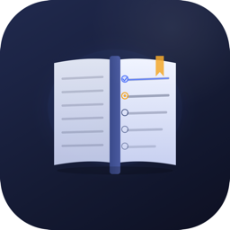

TaskTrackerTaskTracker is a private desktop app for macOS, built by one student for their own use. It brings school assignments, deadlines, email, reminders and grades together in one place.
TaskTracker asks for read-only access to Gmail, Google Drive and Google Sheets. That data is only used to show the owner their own information inside the app, and it is stored only on the owner's computer. Read the privacy policy for details.
TaskTracker is not offered to the public. Only its developer uses it.